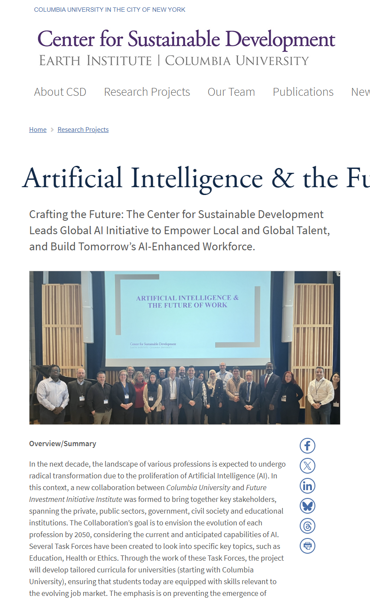
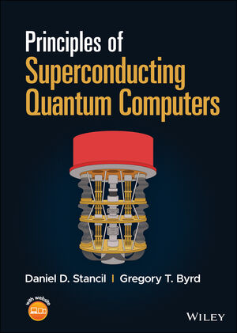
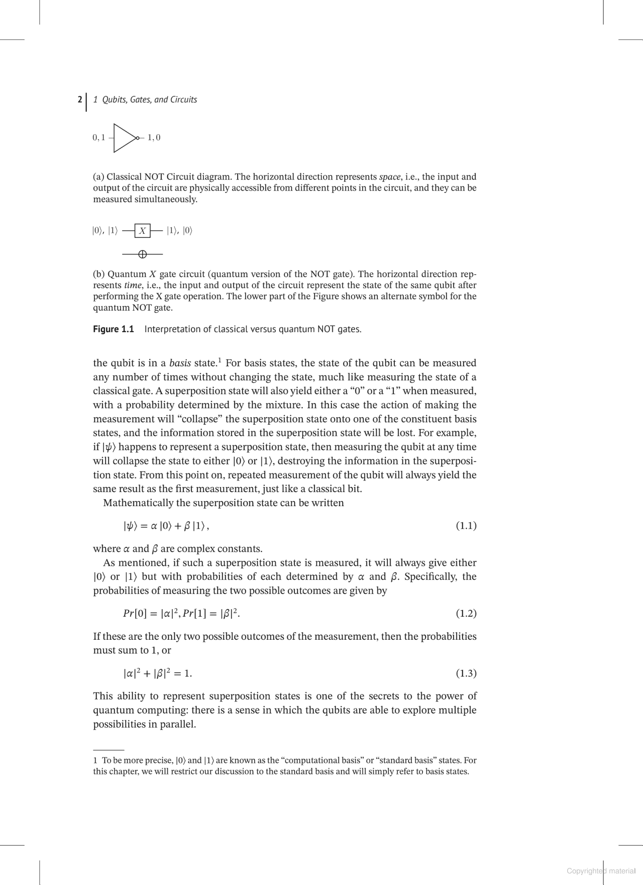
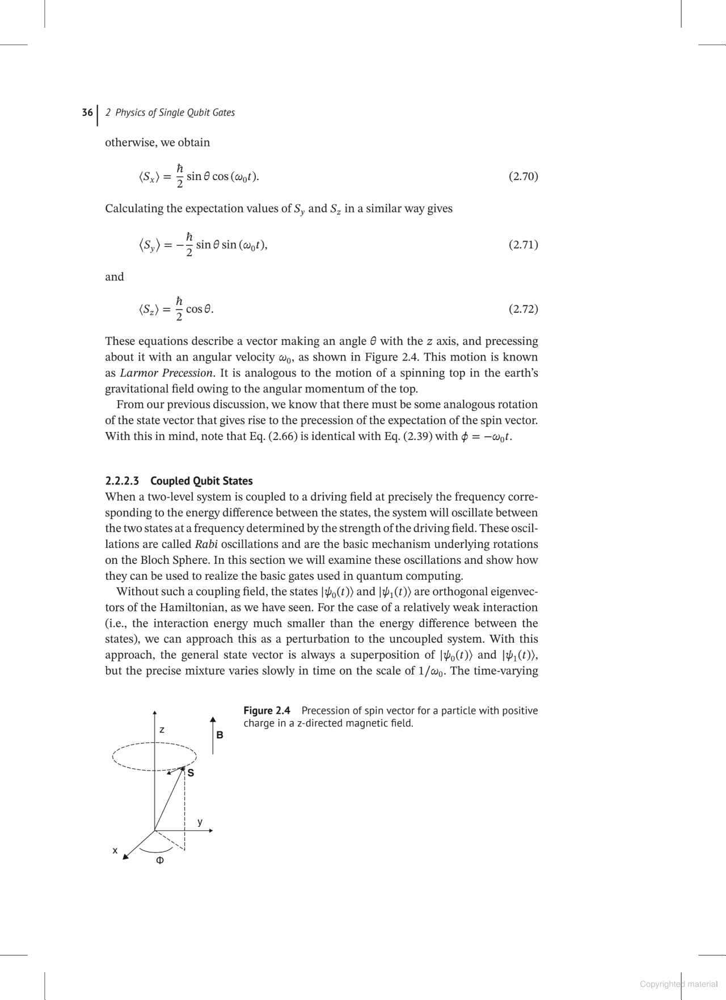
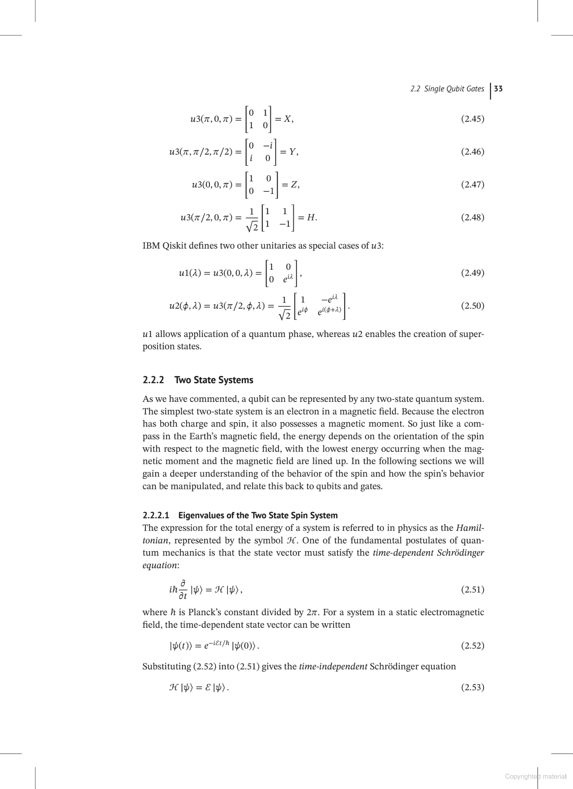
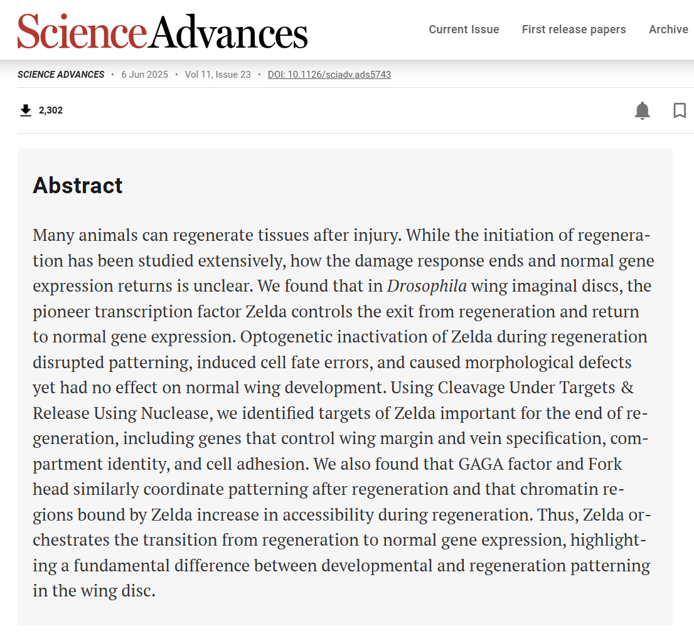
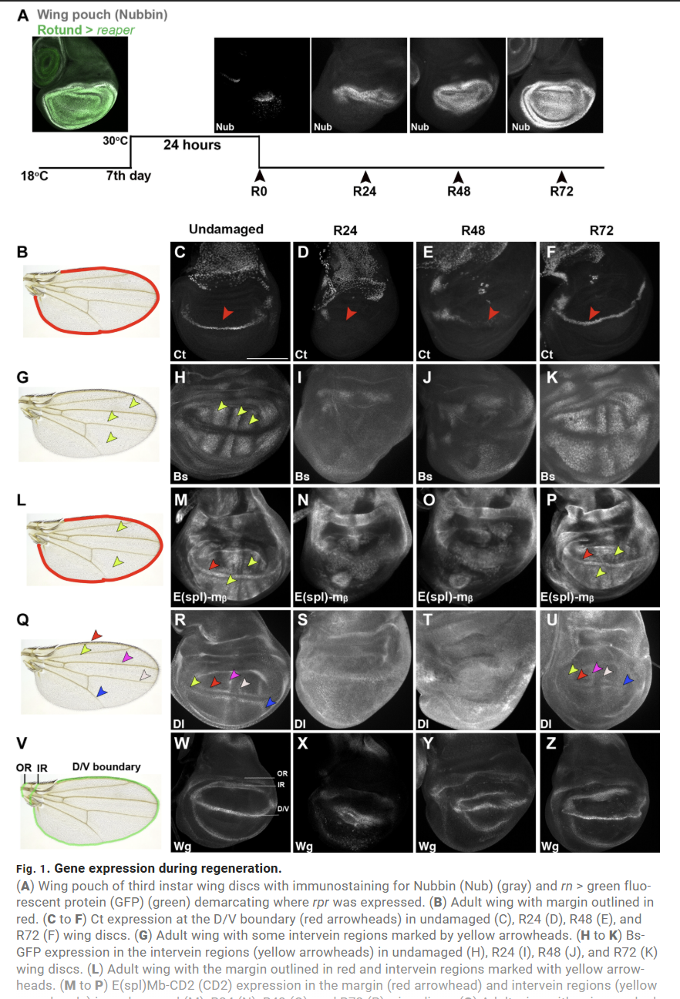
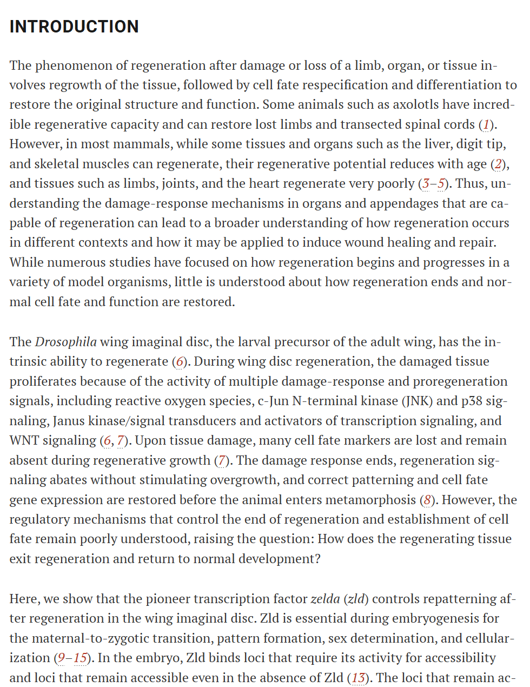

Featured Articles
These are my personal favourite articles on the Rise of Artifical Intelligence and Quantum Computing!
AI & the Future of Work
By Columbia University | 45 min read

People's Choice
This article was voted as this website's top read for the month of July!
In a Nutshell:
- Provides deep insights into AI's impact on employment
- Covers automation, job displacement, and new opportunities thoroughly
- Makes complex AI concepts accessible through clear analysis
- Offers rigorous academic treatment of machine learning and workforce changes
- Goes beyond surface-level discussion with evidence-based perspectives
- Helps readers understand how AI will reshape jobs and workplace preparation
Artifical Intelligence & Its Impact
Principles of Superconducting Quantum Computers
By Daniel D. Stancil, Gregory T. Byrd | 89 min read - it's worth it!




People's Choice
This article was voted as this website's top read for the month of July!
In a Nutshell:
- Superconducting quantum computers are like regular computers but they use special materials that have zero electrical resistance when super-cooled, making them incredibly powerful.
- These machines work by creating tiny electrical loops that can exist in multiple states at once (called superposition), which is what makes quantum computing so much faster than normal computing.
- The "superconducting" part happens when certain metals get so cold that electrons pair up and move through the material without any energy loss - it's like having a perfectly smooth highway for electricity.
- Instead of the 1s and 0s that regular computers use, these quantum bits (qubits) can be 1, 0, or both simultaneously, allowing them to solve complex problems that would take regular computers thousands of years.
- What's really mind-blowing is that superconductivity is actually a quantum effect happening at a scale you can see - it's like the entire material becomes one giant atom that follows quantum physics rules.
Sustainability
Up & Coming
How Transcription Begins
By American Association for Advancement of Science (AAAS) | 35-40 min read



People's Choice
This article was voted as this website's top read for the month of July!
In a Nutshell:
- Superconducting quantum computers are like regular computers but they use special materials that have zero electrical resistance when super-cooled, making them incredibly powerful.
- These machines work by creating tiny electrical loops that can exist in multiple states at once (called superposition), which is what makes quantum computing so much faster than normal computing.
- The "superconducting" part happens when certain metals get so cold that electrons pair up and move through the material without any energy loss - it's like having a perfectly smooth highway for electricity.
- Instead of the 1s and 0s that regular computers use, these quantum bits (qubits) can be 1, 0, or both simultaneously, allowing them to solve complex problems that would take regular computers thousands of years.
- What's really mind-blowing is that superconductivity is actually a quantum effect happening at a scale you can see - it's like the entire material becomes one giant atom that follows quantum physics rules.
Technology
Innovation
Relatable